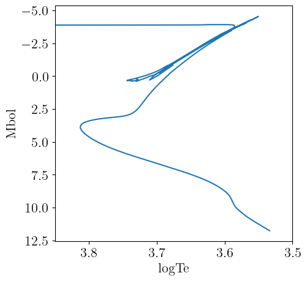
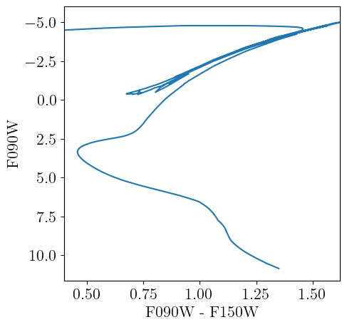

MIST
Here we describe the interface we provide to the MIST v1.2 library of stellar evolutionary tracks. MIST specific code is housed in the MIST submodule, which can be accessed as
using StellarTracks.MIST # load all exported methods
using StellarTracks.MIST: MISTLibrary, X, Y, Z # load specific methodsThe main papers describing the MIST family of stellar models are Dotter [1] and Choi et al. [14]. The tracks as provided by the MIST team here include the equivalent evolutionary points (EEPs) necessary to support robust isochrone creation and interpolation.
The MIST library has been widely used as it covers the full range of stellar masses and metallicities relevant for most studies of stellar populations. MIST includes stars with initial stellar masses from 0.1 to 300 solar masses and initial metallicities $-4 \le [\text{M}/\text{H}] \le 0.5$. MIST includes post-MS and post-RGB evolution (when appropriate). MIST also provides rotating (vvcrit=0.4) and non-rotating (vvcrit=0.0) models.
Data Acquisition
This package handles downloading and pre-processing of the MIST stellar tracks. The main access point we provide is MISTLibrary, which will load and make available the full library of stellar tracks. The first time you call this method, you will be prompted to download the required data files. The total data volume that will be downloaded is about 1.3 GB and will total 158 MB after processing. Information on customizing the install location is available here. The data can be uninstalled by running using DataDeps; rm(datadep"MISTv1.2_vvcrit0.0"; recursive=true); rm(datadep"MISTv1.2_vvcrit0.4"; recursive=true). With all the tracks available, we are able to perform operations like interpolating isochrones at any age and metallicity within the MIST parameter space.
Table Details
The user guide for the MIST products is available here. The full MIST tracks contain 77 data columns originating from the MESA output. An description of the columns is available here. Currently, we process the raw tracks and only save the subset of columns given by StellarTracks.MIST.select_columns (see below). These columns are the ones most commonly needed for computing isochrones and applying bolometric corrections to compare against observed stellar populations. This choice is an optimization for storage space, load time, and development simplicity. If you require access to more columns, please submit an issue on the source repository and we can consider options.
using StellarTracks.MIST
MIST.select_columns # These columns are saved from raw tracks(:star_age, :log_L, :log_Teff, :log_g, :log_surf_cell_z)Examples
Load the full MIST library of non-rotating models vvcrit=0, which is downloaded via DataDeps.jl if not already available. MIST also provides rotating models with vvcrit=0.4 which can be loaded with MISTLibrary(0.4).
using StellarTracks.MIST
p = MISTLibrary(0.0)Structure of interpolants for the MIST library of stellar tracks with vvcrit=0.0. Valid range of metallicities is (-4.0, 0.5).Use the MIST.MISTLibrary to interpolate an isochrone at log10(age [yr]) = 10.05 and metallicity $[\text{M}/\text{H}] = -1.234$. The isochrone is returned as a NamedTuple.
iso = isochrone(p, 10.05, -1.234)(eep = [248, 249, 250, 251, 252, 253, 254, 255, 256, 257 … 1701, 1702, 1703, 1704, 1705, 1706, 1707, 1708, 1709, 1710], m_ini = [0.10025280033448683, 0.10168662186827446, 0.10353974922561122, 0.10612929089041596, 0.10909595817335888, 0.11233603774056, 0.11606609846064037, 0.12035213801026332, 0.12474538252191669, 0.1291430781742897 … 0.8342491393164231, 0.8342507315184663, 0.8342523735465877, 0.8342540740293077, 0.8342558391270521, 0.8342576617152704, 0.8342595432079075, 0.8342614859857673, 0.8342635140599843, 0.8342656218073448], logTe = [3.53373866671961, 3.5351145489458298, 3.536868609218386, 3.5392723696319384, 3.5419692031870875, 3.5448444272002115, 3.5480525429228353, 3.5515890193626363, 3.5550342902531535, 3.55828484583162 … 4.72755255567955, 4.722812923305508, 4.718045790363876, 4.713255084063041, 4.70844418528819, 4.703615181366145, 4.698769247072273, 4.693907377437686, 4.6890319432799785, 4.684144679682596], Mbol = [11.755935265529608, 11.71399151769745, 11.66046609512256, 11.58695484517987, 11.504320017963018, 11.415970136644722, 11.316877544386745, 11.206674705946163, 11.09798024950303, 10.993731089619601 … 3.67088898302782, 3.729754255709554, 3.788917170802253, 3.848275649796108, 3.9077592517693405, 3.9673159378657563, 4.026906489549238, 4.0865034349106315, 4.146098733267294, 4.205686690131054], logg = [5.335135498261987, 5.329616187429436, 5.322598139056072, 5.312998667387316, 5.3022384718547135, 5.290763150651325, 5.277926580969504, 5.263688148201607, 5.24969001370797, 5.236312070031329 … 7.610365566136191, 7.615231278014854, 7.620010091666503, 7.624711029682747, 7.6293385805548946, 7.633895105543113, 7.6383662247181, 7.64275679215676, 7.647073701043727, 7.651316766157619], logL = [-2.8063741062118432, -2.78959660707898, -2.7681864380490238, -2.7387819380719476, -2.7057280071852063, -2.670388054657888, -2.6307510177546978, -2.5866698823784655, -2.543192099801212, -2.50149243584784 … 0.4276444067888719, 0.40409829771617845, 0.3804331316790989, 0.35668974008155685, 0.332896299292264, 0.3090736248536976, 0.28523740418030485, 0.2613986260357477, 0.23756050669308257, 0.2137253239475784], log_surf_cell_z = [-3.0790987748736396, -3.0790987748746117, -3.0790987748262806, -3.0790987747027794, -3.0790987744732474, -3.079098774110238, -3.0790987735334743, -3.0790987726465158, -3.079098771475168, -3.0790987699661168 … -3.0814487721997468, -3.0814486072553624, -3.081448437146475, -3.0814482609642604, -3.081448078067709, -3.081447889251467, -3.0814476943260916, -3.0814474930358795, -3.0814472828638992, -3.0814470644407144])The NamedTuple returned by isochrone can be converted to table types, like TypedTables.Table to simplify further use.
using TypedTables: Table
Table(iso)Table with 7 columns and 1463 rows:
eep m_ini logTe Mbol logg logL log_surf_cell_z
┌────────────────────────────────────────────────────────────────────
1 │ 248 0.100253 3.53374 11.7559 5.33514 -2.80637 -3.0791
2 │ 249 0.101687 3.53511 11.714 5.32962 -2.7896 -3.0791
3 │ 250 0.10354 3.53687 11.6605 5.3226 -2.76819 -3.0791
4 │ 251 0.106129 3.53927 11.587 5.313 -2.73878 -3.0791
5 │ 252 0.109096 3.54197 11.5043 5.30224 -2.70573 -3.0791
6 │ 253 0.112336 3.54484 11.416 5.29076 -2.67039 -3.0791
7 │ 254 0.116066 3.54805 11.3169 5.27793 -2.63075 -3.0791
8 │ 255 0.120352 3.55159 11.2067 5.26369 -2.58667 -3.0791
9 │ 256 0.124745 3.55503 11.098 5.24969 -2.54319 -3.0791
10 │ 257 0.129143 3.55828 10.9937 5.23631 -2.50149 -3.0791
11 │ 258 0.13429 3.5618 10.8779 5.22146 -2.45515 -3.0791
12 │ 259 0.139505 3.56503 10.7677 5.20738 -2.41108 -3.0791
13 │ 260 0.144646 3.56784 10.6666 5.1945 -2.37066 -3.0791
14 │ 261 0.149791 3.57025 10.5734 5.18264 -2.33338 -3.0791
15 │ 262 0.156291 3.57292 10.465 5.16884 -2.28999 -3.0791
16 │ 263 0.163639 3.57568 10.3511 5.15439 -2.24446 -3.0791
17 │ 264 0.171779 3.57841 10.2347 5.13954 -2.19787 -3.0791
⋮ │ ⋮ ⋮ ⋮ ⋮ ⋮ ⋮ ⋮The theoretical isochrone is plotted below.
We can load a grid of bolometric corrections from BolometricCorrections.jl to add observational magnitudes to the theoretical isochrone. In this example, we use the MIST bolometric correction grid, which offers bolometric corrections for varying metallicities ([Fe/H]) and reddening values ($A_V$). This method returns a TypedTables.Table that contains the information from both sources. Here we evaluate an isochrone with log10(age [yr]) = 10.05, $[\text{M}/\text{H}] = -1.234$, and $A_v=0.02$ mag.
using BolometricCorrections.MIST: MISTBCGrid
m = MISTBCGrid("JWST")
iso = isochrone(p, m, 10.05, -1.234, 0.02)Table with 36 columns and 1463 rows:
eep m_ini logTe Mbol logg logL log_surf_cell_z ⋯
┌───────────────────────────────────────────────────────────────────────
1 │ 248 0.100253 3.53374 11.7559 5.33514 -2.80637 -3.0791 ⋯
2 │ 249 0.101687 3.53511 11.714 5.32962 -2.7896 -3.0791 ⋯
3 │ 250 0.10354 3.53687 11.6605 5.3226 -2.76819 -3.0791 ⋯
4 │ 251 0.106129 3.53927 11.587 5.313 -2.73878 -3.0791 ⋯
5 │ 252 0.109096 3.54197 11.5043 5.30224 -2.70573 -3.0791 ⋯
6 │ 253 0.112336 3.54484 11.416 5.29076 -2.67039 -3.0791 ⋯
7 │ 254 0.116066 3.54805 11.3169 5.27793 -2.63075 -3.0791 ⋯
8 │ 255 0.120352 3.55159 11.2067 5.26369 -2.58667 -3.0791 ⋯
9 │ 256 0.124745 3.55503 11.098 5.24969 -2.54319 -3.0791 ⋯
10 │ 257 0.129143 3.55828 10.9937 5.23631 -2.50149 -3.0791 ⋯
11 │ 258 0.13429 3.5618 10.8779 5.22146 -2.45515 -3.0791 ⋯
12 │ 259 0.139505 3.56503 10.7677 5.20738 -2.41108 -3.0791 ⋯
13 │ 260 0.144646 3.56784 10.6666 5.1945 -2.37066 -3.0791 ⋯
14 │ 261 0.149791 3.57025 10.5734 5.18264 -2.33338 -3.0791 ⋯
15 │ 262 0.156291 3.57292 10.465 5.16884 -2.28999 -3.0791 ⋯
16 │ 263 0.163639 3.57568 10.3511 5.15439 -2.24446 -3.0791 ⋯
17 │ 264 0.171779 3.57841 10.2347 5.13954 -2.19787 -3.0791 ⋯
⋮ │ ⋮ ⋮ ⋮ ⋮ ⋮ ⋮ ⋮ ⋱All available columns in the isochrone can be obtained with TypedTables.columnnames.
using TypedTables: columnnames
columnnames(iso)(:eep, :m_ini, :logTe, :Mbol, :logg, :logL, :log_surf_cell_z, :F070W, :F090W, :F115W, :F140M, :F150W2, :F150W, :F162M, :F164N, :F182M, :F187N, :F200W, :F210M, :F212N, :F250M, :F277W, :F300M, :F322W2, :F323N, :F335M, :F356W, :F360M, :F405N, :F410M, :F430M, :F444W, :F460M, :F466N, :F470N, :F480M)A color-magnitude diagram constructed from the isochrone is plotted below.
Chemistry API
We re-export the BolometricCorrections.MIST.MISTChemistry type defined in BolometricCorrections.jl that can be used to access information on the chemical mixture assumed for the MIST models. All models have scaled-solar chemical compositions.
Library API
StellarTracks.MIST.MISTLibrary — TypeMISTLibrary(vvcrit::Number=0)MISTLibrary implements the AbstractTrackLibrary interface for the MIST stellar evolution library. Instances can be constructed by providing a supported vvcrit argument for the rotation parameter, which must be equal to either 0 (no rotation) or 0.4. We set vvcrit=0 by default. If you construct an instance as p = MISTLibrary(0.0), it is callable as p(mh::Number, M::Number) which returns an InterpolatedTrack that interpolates between tracks to a specific metallicity ([M/H]) and initial stellar mass (M).
This type also supports isochrone construction (see isochrone).
Examples
julia> p = MISTLibrary(0.0)
Structure of interpolants for the MIST library of stellar tracks with vvcrit=0.0. Valid range of metallicities is (-4.0, 0.5).
julia> isochrone(p, 10.05, -2) isa NamedTuple
true
julia> p(-2.05, 1.05)
InterpolatedTrack with M_ini=1.05, MH=-2.05, Z=0.0001327966689875739, Y=0.249199427865246, X=0.7506677754657665.StellarTracks.isochrone — Methodisochrone(p::MISTLibrary, logAge::Number, mh::Number)Interpolates properties of the stellar tracks in the library at the requested logarithmic age (logAge = log10(age [yr])) and logarithmic metallicity [M/H] = mh. Returns a NamedTuple containing the properties listed below:
eep: Equivalent evolutionary pointsm_ini: Initial stellar masses, in units of solar masses.logTe: Base-10 logarithm of the effective temperature [K] of the stellar model.Mbol: Bolometric luminosity of the stellar model.logg: Surface gravity of the stellar model.log_surf_cell_z: Base-10 logarithm of the surface metal mass fraction (Z).
Track Set API
StellarTracks.MIST.MISTTrackSet — TypeMISTTrackSet(mh::Number, vvcrit::Number=0)MISTTrackSet implements the AbstractTrackSet interface for the MIST stellar evolution library.
julia> ts = StellarTracks.MIST.MISTTrackSet(0.0, 0.0)
MISTTrackSet with MH=0.0, vvcrit=0.0, Z=0.0142014201420142, Y=0.2703270327032703, 1710 EEPs and 196 initial stellar mass points.
julia> ts(1.01) # Interpolate track at new initial mass
MISTTrack with M_ini=1.01, MH=0.0, vvcrit=0.0, Z=0.0142014201420142, Y=0.2703270327032703, X=0.7154715471547155.
julia> isochrone(ts, 10.0) isa NamedTuple # Interpolate isochrone at `log10(age [yr]) = 10`
trueIndividual Tracks API
StellarTracks.MIST.MISTTrack — TypeMISTTrack(mh::Number, mass::Number, vvcrit::Number=0)MISTTrack implements the AbstractTrack interface for the MIST stellar evolution library.
julia> track = StellarTracks.MIST.MISTTrack(-2, 0.15, 0.0)
MISTTrack with M_ini=0.15, MH=-2, vvcrit=0.0, Z=0.00014899227095992976, Y=0.24922374966753474, X=0.7506272580615054.
julia> track(7.0) # interpolate track at log10(age [yr]) = 7
(log_L = -1.5293719450743, log_Teff = 3.587337261741102, log_g = 4.447603584617846, log_surf_cell_z = -3.8450984758441953)PARSEC References
This page cites the following references:
- [1]
- [14]
- J. Choi, A. Dotter, C. Conroy, M. Cantiello, B. Paxton and B. D. Johnson. MESA ISOCHRONES AND STELLAR TRACKS (MIST). I. SOLAR-SCALED MODELS. ApJ 823, 102 (2016).